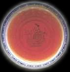
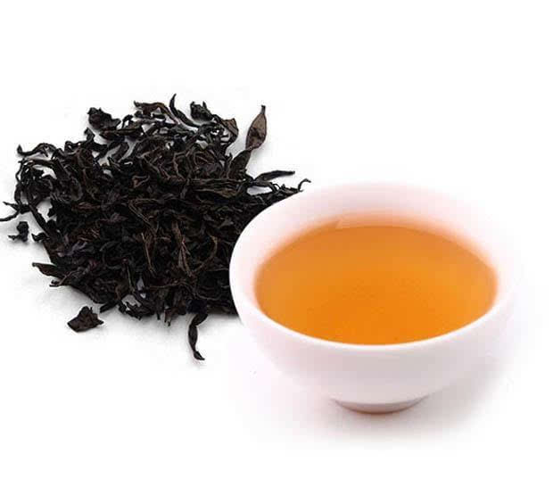

红茶及其特性
茶类的划分可以有多种方法。有的根据制造方法不同和品质上的差异，将茶叶分为绿茶、红茶、乌龙茶（即青茶） 、白茶、黄茶和黑茶六大类。
有的根据我国出口茶的类别将茶叶分为绿茶、红茶、乌龙茶、白茶、花茶、紧压茶和速溶茶等几大类。
有的根据我国茶叶加工分为初、精制两个阶段的实际情况，将茶叶分为毛茶和成品茶两大部分，其中毛茶分绿茶、红茶、乌龙茶、白茶和黑茶五大类，将黄茶归入绿茶一类；成品茶包括精制加工的绿茶、红茶、乌龙茶、白茶和再加工而成的花茶、紧压茶和速溶茶等类。
有的还从产地划分将茶叶称作川茶、浙茶、闽茶等等，这种分类方法一般仅是俗称。还可以其生长环境来分：平地茶，高山茶，丘陵茶。另外还有一些“茶”其实并不是真正意义上的茶，但是一般的饮用方法上与一般的茶一样，故而人们常常以茶来命名之，例如虫茶、鱼茶。有的这类茶已经没有多少人知道它不是茶了，例如绞股蓝茶。将上述几种常见的分类方法综合起来，中国茶叶则可分为基本茶类和再加工茶类两大部分。

按茶色不同来分类——红茶：
红茶，以适宜制作本品的茶树新芽叶为原料，经萎调、揉捻(切）、发酵、干燥等典型工艺过程精制而成。因其干茶色泽和冲泡的茶汤以红色为主调，故名。
红茶开始创制时称为“乌茶”。红茶在加工过程中发生了以茶多酚酶促氧化为中心的化学反应，鲜叶中的化学成分变化较大，茶多酚减少90％以上，产生了茶黄素、茶红素等新的成分。香气物质从鲜叶中的50多种，增至300多种，一部分咖啡碱。儿茶素和茶黄素络合成滋味鲜美的络合物①，从而形成了红茶、红汤、红叶和香甜味醇的品质特征。

小种红茶：开创了中国红茶的纪元。起源16世纪。最早为武夷山一带发明的小种红茶。1610年荷兰商人第一次运销欧洲的红茶就是福建省崇安县星村生产的小种红茶（今称之为“正山小种”）。至18世纪中叶，又从小种红茶演变为工夫红茶。从19世纪80年代起，我国红茶特别是工夫红茶，在国际市场上曾占统治地位。小种红茶是福建省的特产，有正山小种和外山小种之分。正山小种产于崇安县星村乡桐木关一带，也称“桐木关小种”或“星村”小种。政和、但洋、古田。沙县及江西铅山等地所产的仿照正山品质的小种红茶，统称“外山小种”或“人工小种”。在小种红茶中，唯正山小种百年不衰，主要是因其产自武夷高山地区，崇安县星村和桐木关一带，地处武夷山脉之北段，海拔1000～1500米，冬暖夏凉，年均气温18C，年降雨量2000毫米左右，春夏之间终日云雾燎绕，茶园土质肥沃，茶树生长繁茂，叶质肥厚，持嫩性好，成茶品质特别优异。
工夫红茶：是我国特有的红茶品种，也是我国传统出口商品。当前我国十九个省产茶（包括试种地区新疆、西藏），其中有十二个省先后生产工夫红茶。我国工夫红茶品类多、产地广。按地区命名的有滇红工夫、祁门工夫、浮梁工夫、宁红工夫、湘江工夫、闽红工夫（含但洋工夫、白琳工夫、政和工夫）、越红工夫、台湾工夫、江苏工夫及粤红工夫等。按品种又分为大叶工夫和小叶工夫。大叶工夫茶是以乔木或半乔木茶树鲜叶制成；小叶工夫茶是以灌木型小叶种茶树鲜叶为原料制成的工夫茶。
红碎茶：我国红碎茶生产较晚，始于本世纪的50年代后期。近年来产量不断增加，质量也不断提高。红碎茶的制法分为传统制法和非传统制法两类。传统红碎茶：以传统揉捻机自然产生的红碎茶滋味浓，但产量较低。非传统制法的红碎茶：分为转子红碎茶（国外称洛托凡（Ro tO va ne〕红碎茶）；C.T.C红茶和L.T.P（劳瑞制茶机）红碎茶。如以C.T.C揉切机生产红碎茶，彻底改变了传统的揉切方法。萎雕叶通过两个不锈钢滚轴间隙的时间不到一秒钟就达到了破坏细胞的目的，同时使叶子全部轧碎衣颗粒状。发酵均匀而迅速，所以必须及时进行烘干，才能达到汤味浓强鲜的品质特征。以不同机械设备制成的红碎茶，尽管在其品质上差异悬殊，但其总的品质特征，共分为四个花色。
叶茶：传统红碎茶的一种花色，条索紧结匀齐，色泽乌润，内质香气芬芳，汤色红亮，滋味醇厚，叶底红亮多嫩茎；
碎茶：外形颗粒重实匀齐，色泽乌润或泛棕，内质香气馥郁，汤色红艳，滋味浓强鲜爽，叶底红匀；
片茶：外形全部为木耳形的屑片或皱折角片，色泽乌褐，内质香气尚纯，汤色尚红，滋味尚浓略涩，叶底红匀；
未茶：外形全部为砂粒状未，色泽乌黑或灰褐，内质汤色深暗，香低味粗涩，叶底暗红。红碎茶产区主要是云南、广东、海南、广红茶为我国第二大茶类，出口量占我国茶叶总产量的50％左右，客户遍布60多个国家和地区。其中销量最多的是埃及、苏丹。黎巴嫩、叙利亚、伊拉克、巴基斯但、英国及爱尔兰、加拿大、智从德国、荷兰及东欧各国。
各类红茶名：祁门功夫；湖红功夫；滇红功夫；功夫红茶；宁红功夫；宜红功夫；越红功夫；川红功夫；政和功夫；闽红功夫；坦洋功夫；白琳功夫。